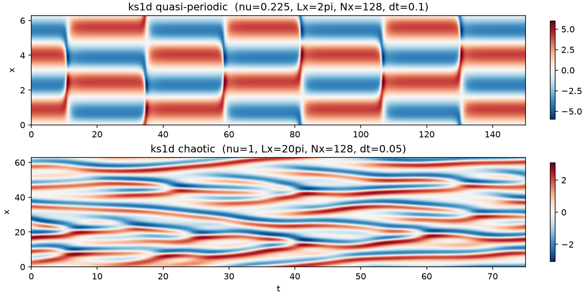

qlroms.intrusive_qlroms.ks1d — 1-D Kuramoto–Sivashinsky
\(u_t + u u_x + u_{xx} + \nu u_{xxxx} = 0\) on a periodic domain, spectral (ETDRK4) FOM.
The reduced operators come straight from the FOM's Fourier multipliers, so each
ROM member is an exact Galerkin projection (with the nonlinearity lifted through
\(\bm{\Phi}_k\) and the centroid at every stage).

The two TEST_CASES, 1500 steps past the transient: quasi-periodic (\(\nu = 16/71\), \(L_x = 2\pi\), \(N_x = 128\), \(\Delta t = 0.1\), \(\lambda_1 = 0\)) and chaotic (\(\nu = 1\), \(L_x = 20\pi\), \(N_x = 128\), \(\Delta t = 0.05\), \(\lambda_1 \approx 0.062\)).
At a glance
| Name | One-liner |
|---|---|
config.TEST_CASES |
The cases (quasi-periodic, chaotic): physics, generation windows, usual \((K, r)\), characterization timescales. |
config.KSConfig |
Torch-side grid and spectral operators of a case; base of ROM, carried by FOM as .cfg. |
fom.FOM |
The full-order model: a dynamodels.physical.KS built from a case name (build_ks.build_fom). |
rom.ROM |
One chart: Chart geometry + the projected operators and the ETDRK4 step_reduced. |
rom.build_local_model(Xtrain, fom, r, K, save_dir) |
Cluster, per-cluster POD, atlas, compile the ROMs into a qlGalerkin; cached. |
rom.get_simulation_path(model, Ntrain) |
Cache directory keyed on \((\nu, L_x, N_x, \Delta t)\) and Ntrain. |
qlroms.intrusive_qlroms.ks1d.config
ks1d/config.py -- 1D Kuramoto-Sivashinsky case definitions.
TEST_CASES: one dict per case (visc/Lx/Nx/dt/lamb1, the generation windows
i0/Ntrain/Ntest, the usual (K, r), characterization timescales).
KSConfig: torch-side grids and spectral operators (Lhat, Dhat, Ghat, L, G)
of a case; base of rom.ROM and carried by fom.FOM as .cfg.
The full-order model lives in fom.py (FOM); the ROM stack in rom.py (ROM, qlROM, build_local_model, get_simulation_path).
KSConfig
dataclass
Configuration class for 1D KS system, used as base for both FOM and ROM dataclasses. Equatuons: u_t + u u_x + u_xx + nu u_xxxx = 0, x in [0, L], t > 0 u(x, 0) = u0(x) u(x+L, t) = u(x, t) (periodic BCs)
Parameters:
| Name | Type | Description | Default |
|---|---|---|---|
visc
|
Viscosity parameter nu. |
required | |
Lx
|
Domain length L. |
required | |
Nx
|
Number of spatial grid points. |
required | |
dt
|
Time step size for ETDRK4. |
required | |
lamb1
|
Leading Lyapunov exponent (used for estimating predictability time). |
required | |
M
|
int
|
Number of contour points for ETDRK4 resolvent integrals (default 32). |
32
|
The domain is multiplied by 2pi for consistency with standard KS literature, so L=102*pi corresponds to the commonly studied chaotic regime with ~40 active modes and lam1 ~= 0.062.
Source code in qlroms/intrusive_qlroms/ks1d/config.py
65 66 67 68 69 70 71 72 73 74 75 76 77 78 79 80 81 82 83 84 85 86 87 88 89 90 91 92 93 94 95 96 97 98 99 100 101 102 103 104 105 106 107 108 109 110 111 112 113 114 115 116 117 118 119 120 121 122 123 124 125 126 127 128 129 130 131 132 133 134 135 136 137 138 139 140 141 142 143 144 145 | |
N
property
Flattened state-vector length. 1D: N == Nx (matches 2D's Nx*Ny).
qlroms.intrusive_qlroms.ks1d.fom
Full-order model of a ks1d case: dynamodels.physical.KS built from a case name; carries its KSConfig as .cfg -- see build_ks.build_fom.
FOM
Bases: KS
Full-order model of a ks1d case: a dynamodels.physical.KS built from a case name.
The case's PHYSICAL parametrization is passed straight through --
KS(Nx=Nx, dt=dt, L=Lx, nu=visc) -- because dynamodels >= 0.3.3 honours an
independent (nu, L) pair. So there is no rescaling anywhere: self.dt IS the
case's physical time step, self.L IS Lx, self.nu IS visc, and the
spectral state is the physical field's rfft (no sqrt(visc) amplitude factor).
The torch-side case config is carried whole as self.cfg (a KSConfig); pass
THAT to qlroms.utils.diagnosis, whose FOM argument reads N/dt in case units --
dynamodels' Model.N is the analysis-augmented size Nphi + Na + Nq, not Nx.
Call sites wanting the state size use fom.Nx or fom.cfg.N.
The handful of case-side quantities the torch ROM stack reads off the FOM are
real properties delegating to self.cfg: visc, Lx, lamb1, device,
rdtype, cdtype. Nothing else is aliased -- in particular N, M, m, x
and dt keep their dynamodels Model meaning.
The initial condition is the deterministic u0 = cos(x) on the case grid, spectrally seeded, so trajectories (and the caches keyed on visc/Lx/Nx/dt) are unchanged.
Source code in qlroms/intrusive_qlroms/ks1d/fom.py
12 13 14 15 16 17 18 19 20 21 22 23 24 25 26 27 28 29 30 31 32 33 34 35 36 37 38 39 40 41 42 43 44 45 46 47 48 49 50 51 52 53 54 55 56 57 58 59 60 61 62 63 64 65 66 67 68 69 70 71 72 73 74 75 76 77 78 79 80 81 82 | |
case
property
Key into TEST_CASES this FOM was built from.
visc
property
Physical viscosity nu of the case (== self.nu, in case notation).
Lx
property
Physical domain length (== self.L, in case notation).
lamb1
property
Leading Lyapunov exponent of the case.
qlroms.intrusive_qlroms.ks1d.rom
Reduced-order models for the 1D KS system, on the unified qlroms stack.
ROM (a qlroms.charts.Chart) is the ONLY class this case defines: one cluster's geometry plus its intrusive Galerkin operators and step_reduced. The quantized-local model is the generic compilation qlroms.base.qlROM -- a compilation of Galerkin members IS a qlGalerkin -- assembled by build_local_model. Stepping is model.step(apod); there is no case timestepping module.
ROM
dataclass
Single-cluster reduced-order model: a qlroms.charts.Chart (local POD geometry) plus this case's intrusive Galerkin operators. Phi and centroid are fixed after construction, so all cached_property operators are computed once and never invalidated.
Source code in qlroms/intrusive_qlroms/ks1d/rom.py
33 34 35 36 37 38 39 40 41 42 43 44 45 46 47 48 49 50 51 52 53 54 55 56 57 58 59 60 61 62 63 64 65 66 67 68 69 70 71 72 73 74 75 76 77 78 79 80 81 82 83 84 85 86 87 88 89 90 91 92 93 94 95 | |
galerkin_rom
cached
property
(Lc, G) -- constant centroid linear forcing and projected nonlinear operator.
etdrk4_rom
cached
property
(E, E2, Q, f1, f2, f3) ETDRK4 coefficients for reduced model.
step_reduced(a)
One ETDRK4 step of the pure (r, 1) reduced state with this cluster's intrusive Galerkin dynamics (nonlinearity lifted through Phi/centroid, as the KS equation requires).
Source code in qlroms/intrusive_qlroms/ks1d/rom.py
80 81 82 83 84 85 86 87 88 89 90 91 92 93 94 95 | |
build_local_model(Xtrain, FOM, r=30, K=5, save_dir='.', clustering_kwargs=None)
Train a local POD-ROM from training snapshots and return model data. Parameters: Xtrain: Training snapshot matrix, shape (Nx, Ntrain). FOM: FOM instance providing KS parameters and operators. r: Number of POD modes for each local ROM. K: Number of clusters/local ROMs. save_dir: Directory path to save the trained model. clustering_kwargs: Forwarded to fit_clusters (random_state, kmeans_method, kmeans_n_init, kmeans_max_iter, assign_overlapping, overlap_tolerance). Returns: qlGalerkin instance with trained local ROM data.
Source code in qlroms/intrusive_qlroms/ks1d/rom.py
103 104 105 106 107 108 109 110 111 112 113 114 115 116 117 118 119 120 121 122 123 124 125 126 127 128 129 130 131 132 133 134 135 136 137 138 139 140 141 142 143 144 145 146 147 148 149 150 151 152 153 154 155 156 157 158 159 160 161 162 163 164 165 166 167 168 169 170 171 172 173 174 175 176 177 178 179 180 181 182 183 184 185 186 187 188 189 190 191 192 193 194 195 196 197 198 199 200 201 202 203 204 205 206 207 208 209 210 211 212 213 214 215 216 217 218 219 220 221 222 223 224 225 226 227 228 229 230 231 232 233 234 235 236 237 238 239 240 241 242 243 244 245 246 247 248 249 250 251 252 253 | |
get_simulation_path(model, Ntrain=None, Ntest=None, dt=None)
Cache directory of the models fitted on this case at this training length.
model is either the ks1d FOM or a torch-side KSConfig/ROM; both carry the case's
PHYSICAL (visc, Lx, Nx, dt). Only Ntrain enters the path: a model is defined by
what it was fitted on, and the test window is chosen afterwards, out of the same
cached trajectory. Ntest is accepted and ignored so older call sites keep working.
Source code in qlroms/intrusive_qlroms/ks1d/rom.py
256 257 258 259 260 261 262 263 264 265 266 267 268 | |